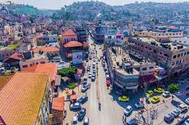

طالب هندسة حاسوب في السنة الدراسية الرابعة في الجامعة العربية الامريكية هواياتي البرمجة

تقع في شمال الضفة الغربية التابعة للسلطة الفلسطينية ومركزها مدينة جنين. تشكل المحافظة ثقلا إقصاديا أكبر بكثير من حجمها السكاني. يبلغ عدد سكانها حوالي 256,000 نسمة. وتبلغ مساحتها 583 كم2 وتشكل مانسبته 9,7 % من مساحة الضفة الغربية الإجمالية. ويتبع مدينة جنين مخيم جنين الذي يقع غربها ويسكنه 16,000 لاجئ. تعتبر جنين وقراها من أكثر المدن الفلسطينية التي تؤرق إسرائيل، فمنها خرج الكثير من الشبان الذين قاموا بعمليات فدائية كثيرة داخل العمق الإسرائيلي رداً على الاغتيالات والاعتقالات التي كانت ولا تزال تقوم بها بحق القادة والشبان الفلسطينيين خلال الانتفاضة وما قبلها.
